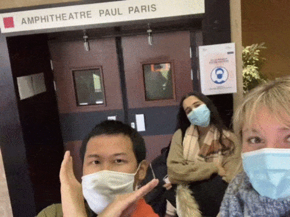
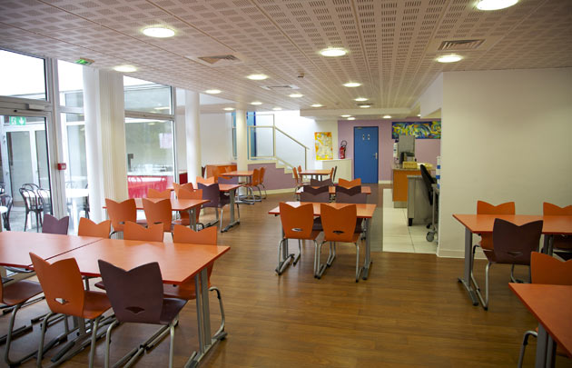
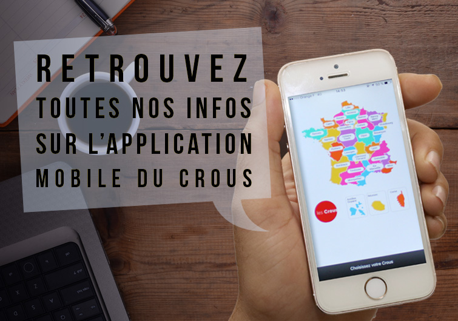
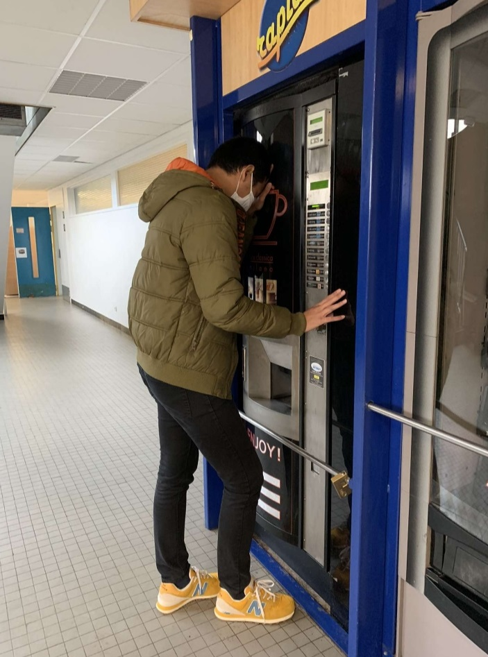
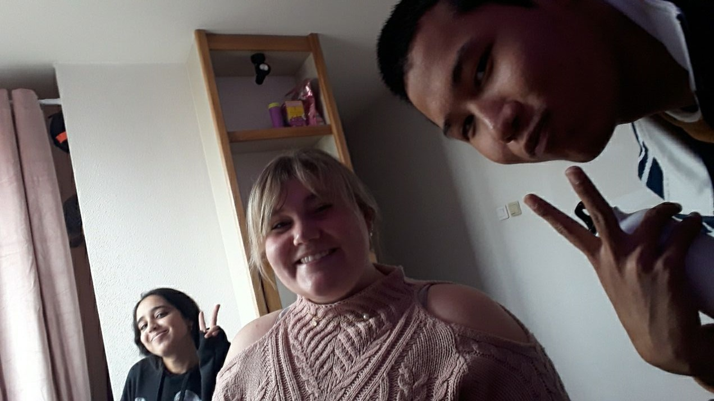
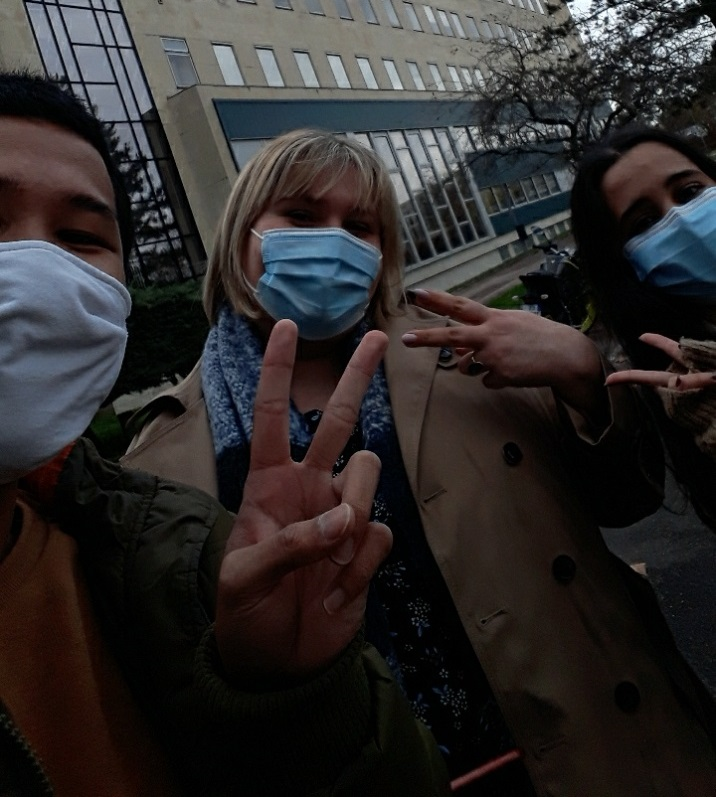

Qui suis-je?
- Anon
- 19 ans
- Son sport favori le Badminton
- Il est muni d'un radar à beaux mecs
- Et il n'a toujours pas trouvé la perle rare
Surtout si vous avez cours avec Paris, n'y entrez surtout pas!
Comment manger vite et bien
A partir de midi, c'est "THE" timing à ne surtout pas manquer!
Ayant qu'une heure pour déjeuner il faut arriver dans les premiers au RU de préférence le plus proche.
C'est à dire à Montmuzard.
Chaque année la queue devient de plus en plus interminable.
Et s'accentue de à vitesse grand V, avec le covid
Suite à des restrictions, des chaises ont été enlevé.
Donc il est très important d'avoir une bonne vue.
Voici quelques conseils pour bien manger en étant efficace en moins d'une heure
Courir au restaurant universitaire
Trouver une table avec DES CHAISES!
Avoir installé au préalable l'application Crous, pour voir le menu
Si vous avez des pièces jaunes, n'hésitez pas à faire sauter le caisson dans la machine à café
Stressez en groupe
Prévoir du brouillon
Le départ
La voiture (à s'arrêter avant le feu rouge de préférence)
Après le partiel, "désespoir check"
